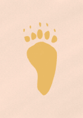

1번 『반달가슴곰 발자국』을 읽고 어느 쪽의 발자국 그림인지 보기에서 알맞은 말을 끌어다 놓으세요.
반달가슴곰 발자국
박인주
반달가슴곰은 네 발로 걷기도 하고 두 발로 서서 걷기도 한다. 발바닥이 크고 두껍고 털이 거의 없다. 앞발과 뒷발 모두 발가락이 다섯 개이고, 발톱이 또렷하게 찍힌다.
뒷발 발자국이 사람 발자국과 무척 비슷하다. 사람 발처럼 좁고 길며 앞이 넓고 뒤가 좁다. 앞발 발바닥은 앞부분만 찍혀서 뒷발보다 훨씬 짧아 보인다. 앞발 발자국은 오소리 발자국과 비슷하다. 사람처럼 뒷발 발바닥에 쏙 들어간 쪽이 안쪽이어서 왼발, 오른발을 가려낼 수 있다.
반달가슴곰은 몸집이 크고 무거워서 잘 뛰지 않고 주로 걷는다. 사람이 안짱걸음으로 걸을 때처럼 발자국이 안쪽으로 나 있다.
안짱걸음: 두 발끝을 안쪽을 향해 들여 모아 걷는 걸음.
앞발
뒷발
 |
 |
| 발자국 | 발자국 |